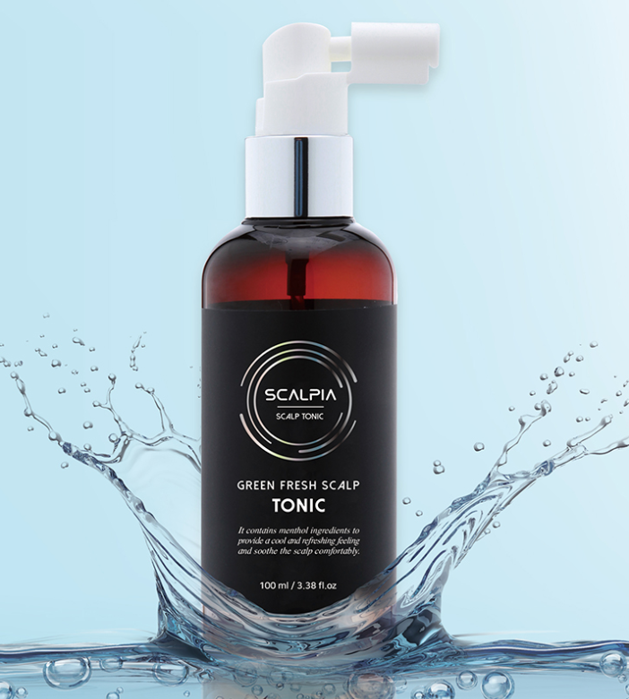
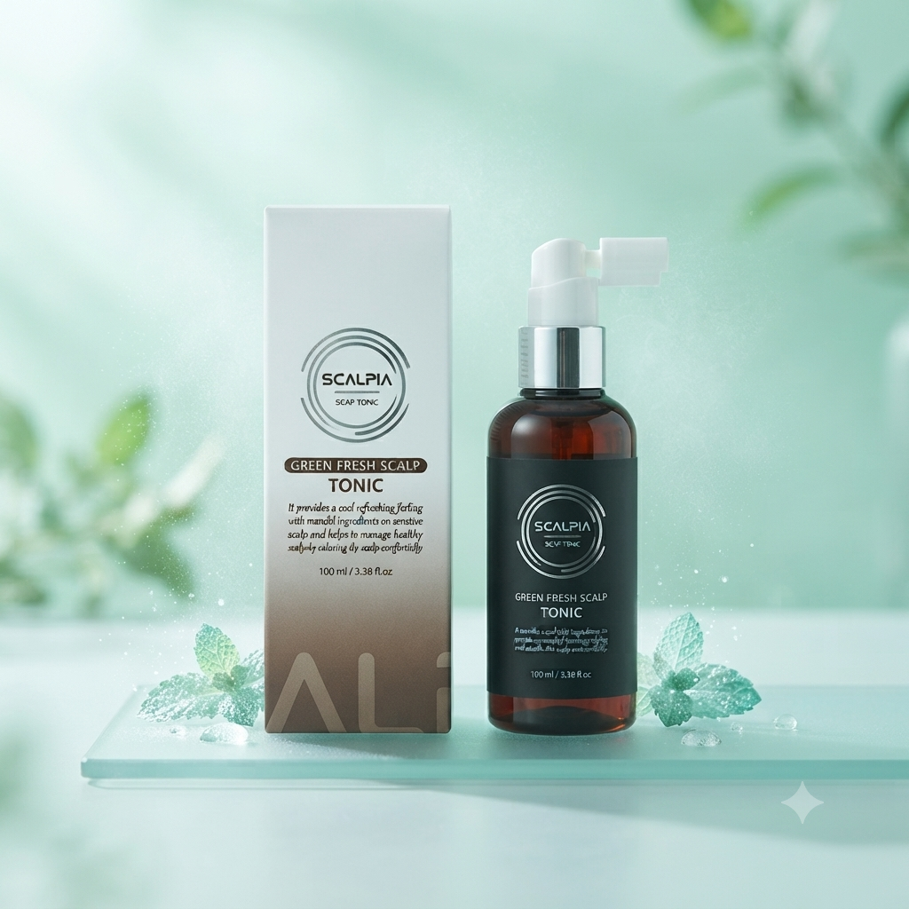

べたつかずさっぱりとしたウォータータイプ
さっぱりとした潤い / 爽快感を与える / 手軽なケア


羊水由来ヒト幹細胞培養液が
頭皮に潤いを与えます
メントール成分が爽快感を与え
頭皮をリフレッシュさせます
頭皮の汚れや毛穴の皮脂をすっきり整えます
紫外線や乾燥などの外部環境にさらされている頭皮に潤いを与え、多様な成分が頭皮と髪のコンディションを整え、健やかな状態を保ちます。
ハッカやペパーミントなどから抽出した成分で、爽快感を与え、デリケートになりがちな頭皮をリフレッシュさせます。
フラボノイド成分を含有し、肌本来の力をサポートし、健やかな頭皮を保ちます。
頭皮に水分を与えて整え、いきいきとした状態へ導きます。
フィトンチッド成分を含み、頭皮を健やかに清潔に保ちます。
頭皮に軽い潤いを与え、引き締めることでコンディションを整えます。
不快なニオイをマスキングし、頭皮をさっぱりと保ちます。
外部環境によって乾燥した頭皮にハリを与え、ツヤのある健やかな状態へ導きます。
ポリフェノール成分がコンディションを整え、頭皮と髪を健やかに保ちます。
水分供給を通じて頭皮を柔軟に保ち、健やかな状態へ導きます。
アミノ酸、ビオチン、ミネラルなど、頭皮と髪に有用な成分を豊富に含み、健やかなケアをサポートします。
※上記内容は原料の一般的な性質に関する説明であり、製品の効果効能を保証するものではありません。